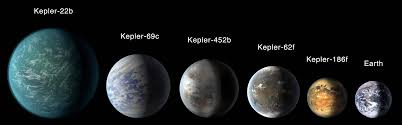

|

Güneş Sistemi Dışındaki Ötegezegenler (Exoplanetler)
Exoplanetler, yani ötegezegenler, Güneş Sistemi’nin dışında yer alan ve başka yıldızların etrafında dönen gezegenlerdir. Güneş’in çevresinde dönen
gezegenler bizim sistemimizi oluştururken, evrende milyarlarca yıldızın etrafında da kendi gezegenleri bulunur. Bu gezegenlere exoplanet adı verilir.
Gözle görülmeleri oldukça zordur çünkü kendi yıldızlarına çok yakın olurlar ve yıldız ışığı gezegenin yansıttığı ışığı gizler. Bu nedenle bilim insanları
onları doğrudan değil, dolaylı yöntemlerle tespit eder.
En sık kullanılan yöntemlerden biri transit yöntemidir. Bu yöntemde, gezegen yıldızının önünden geçerken yıldızın parlaklığı çok az bir miktar azalır.
Bu azalma düzenli aralıklarla oluyorsa, o yıldızın etrafında bir gezegenin döndüğü anlaşılır. Bir diğer yöntem olan radyal hız ya da Doppler yöntemi,
yıldızın gezegenin çekim etkisiyle çok küçük bir salınım yapmasını temel alır. Bu salınım, yıldızın ışığında fark edilir bir değişim yaratır. Daha az
kullanılan doğrudan görüntüleme yöntemi ise özel teleskoplarla yıldız ışığını filtreleyip gezegenin kendi yansımasını yakalamaya dayanır.
Bugüne kadar binlerce exoplanet keşfedilmiştir ve her biri farklı özelliklere sahiptir. Bazı gezegenler Jüpiter’den çok daha büyük olup yıldızlarına
çok yakındırlar; bu tür gezegenlere sıcak Jüpiter denir. Bazıları Dünya’ya benzeyen, kayasal yapıda ve su bulunma ihtimali olan gezegenlerdir.
Bu gezegenler, yaşanabilir olma ihtimalleri nedeniyle bilim insanlarının en çok ilgisini çekenlerdir.
Bazı ilginç türler arasında Dünya’dan birkaç kat daha büyük süper Dünya’lar, Neptün’e benzeyen ama daha küçük mini Neptünler, tamamen suyla kaplı
olabileceği düşünülen okyanus gezegenleri ve aşırı sıcak koşullara sahip sıcak Jüpiterler yer alır.
Yaşanabilir bölge, bir yıldızın çevresinde yüzeyde sıvı suyun bulunabileceği sıcaklık aralığına sahip olan alandır. Bilim insanları, özellikle
bu bölgedeki exoplanetleri inceler. Örneğin Kepler-452b, Dünya’ya oldukça benzeyen bir gezegendir. TRAPPIST-1 sisteminde ise yedi kayasal gezegen
bulunur ve bunlardan üçü yaşanabilir bölgede yer alır. Ayrıca Proxima Centauri b, Dünya’ya en yakın yıldız sisteminde bulunan ve yaşam için uygun
olabileceği düşünülen bir diğer ötegezegendir.
Sonuç olarak exoplanetler, evrende yalnız olup olmadığımızı anlamak açısından büyük önem taşır. Şu ana kadar beş binden fazla ötegezegen keşfedilmiştir
ve her biri, evrenin ne kadar geniş ve çeşitli olduğunu göstermektedir. Her yeni keşif, insanlığı “Evrende başka yaşam formları var mı?” sorusuna biraz
daha yaklaştırmaktadır.
|